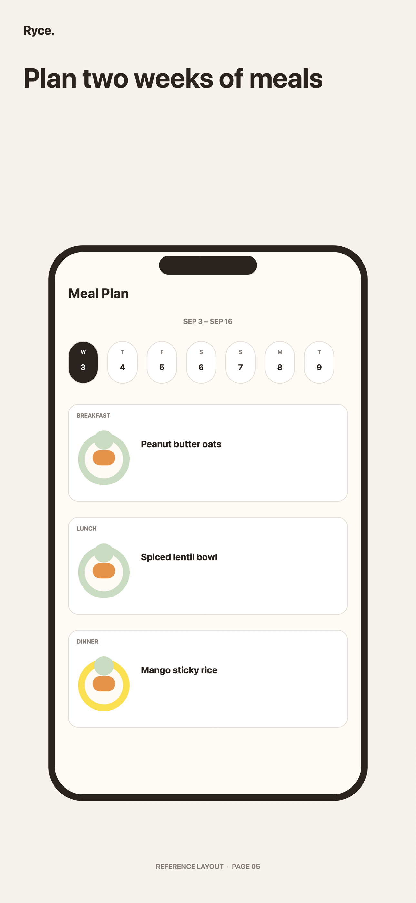
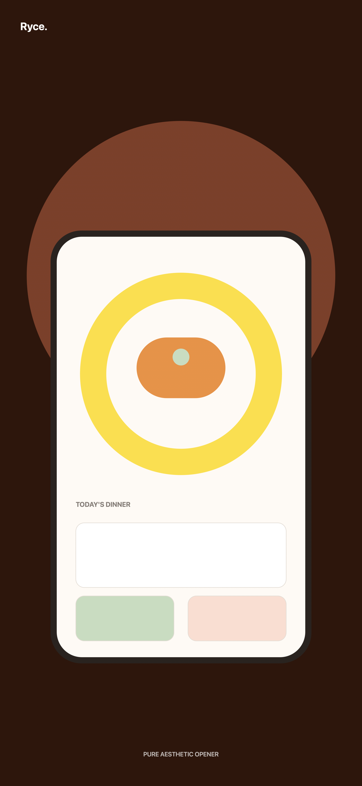
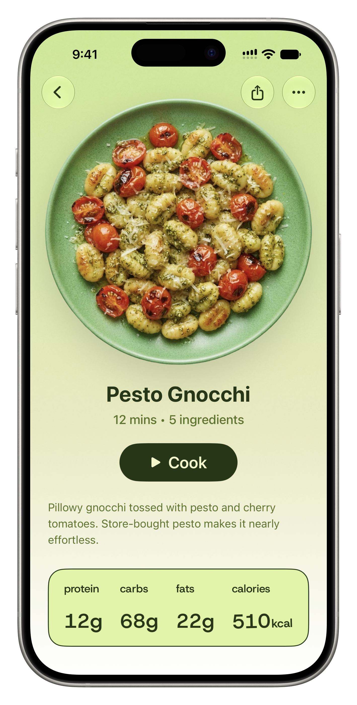
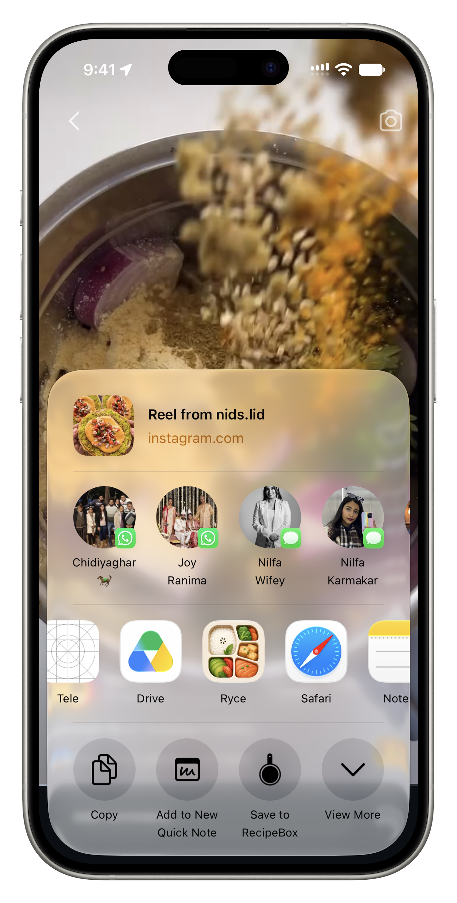
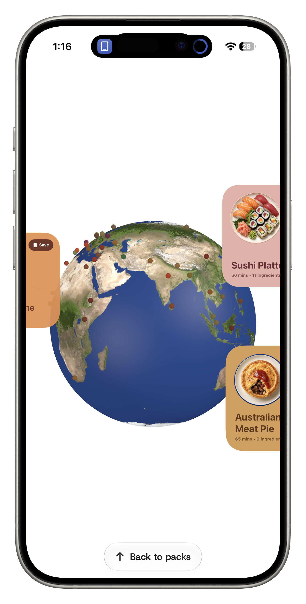
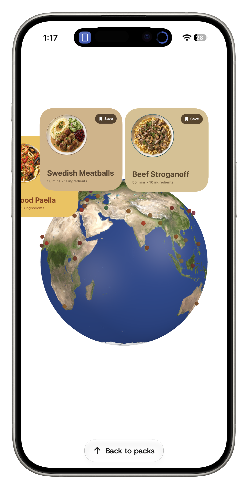
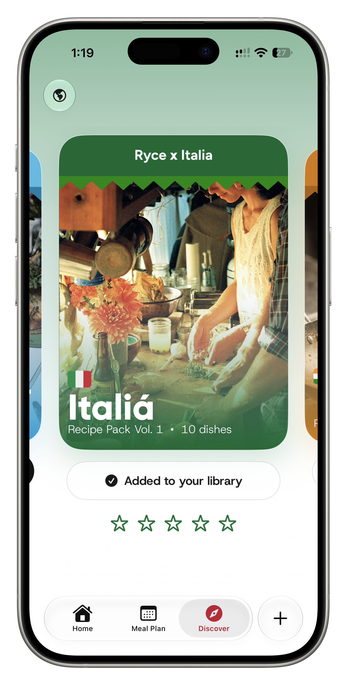
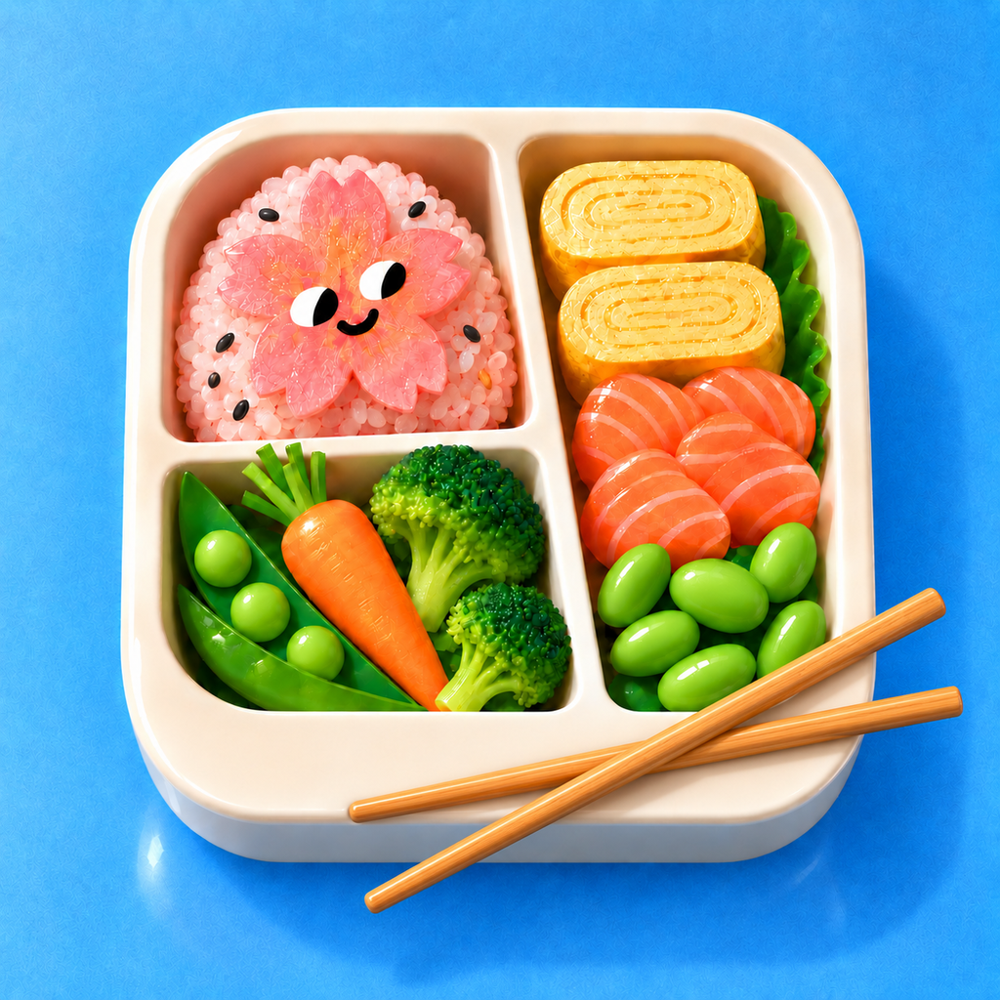

Introducing Ryce
Make room for
good food.
The recipes you love. The meals you’ll make. All beautifully together.
Available for iPhone.



A better way to eat well
From “What should we make?”
to “Let’s make this.”
Good food starts long before the first ingredient. Ryce helps you find inspiration, keep it close, and turn it into a meal worth sharing.
01 / Keep the good ones
Every recipe
in its place.
That dish you saw in a video. The family recipe you always come back to. The one you can’t wait to try. Bring them into Ryce and build a collection that feels like yours.
Get Ryce
to your kitchen.
02 / Know what’s next
A plan that makes
life easier.
Look ahead to the meals that matter, then get back to your day. Ryce keeps the next one in view and gives your saved ideas a place on the calendar.
03 / Enjoy the making
Less figuring out.
More cooking.
When it’s time to cook, the recipe is ready. Ingredients, steps, and everything you need are right where you expect them.
A world of ideas
Go somewhere
delicious.
Spin the globe. Find something new. Explore food from around the world and make a little more room for curiosity at your table.



See Ryce in motion.

The joy of deciding, together
Tonight looks good.
Bring your ideas to the table with Ryce.
Download Ryce